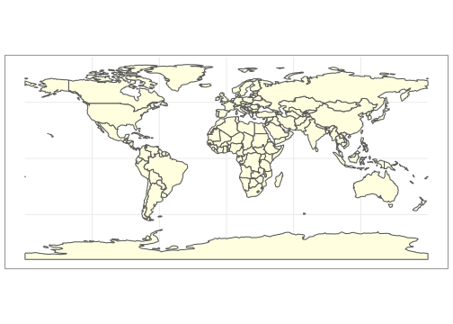
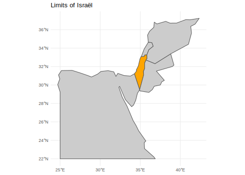
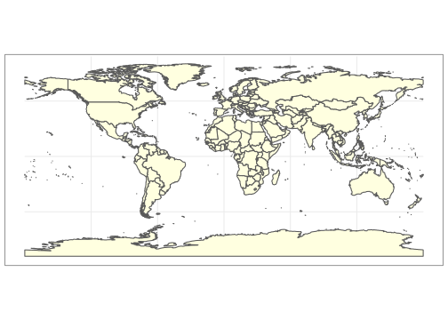
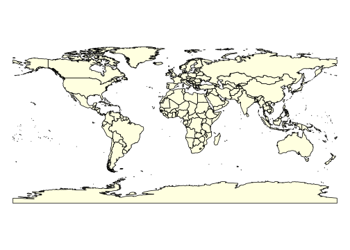

Chapitre 3 L’API Natural Earth
## Global options
library(knitr)
library(dplyr)
library(sf)
opts_chunk$set(echo=TRUE,
cache=TRUE,
prompt=FALSE,
tidy=FALSE,
comment=NA,
message=FALSE,
warning=FALSE)3.1 Objectifs
Nous allons ici utiliser le fonds de carte Natural Earth qui est un fonds de carte libre de droit et mis à jour régulièrement. Le site web du projet se situe à l’adresse suivante :
https://www.naturalearthdata.com/
Il indique ses objectifs comme suit :
“Natural Earth is a public domain map dataset available at 1:10m, 1:50m, and 1:110 million scales. Featuring tightly integrated vector and raster data, with Natural Earth you can make a variety of visually pleasing, well-crafted maps with cartography or GIS software.[…] Natural Earth was built through a collaboration of many volunteers and is supported by NACIS (North American Cartographic Information Society), and is free for use in any type of project (see our Terms of Use page for more information).”
On peut télécharger les différents fonds de carte sur le site web, mais dans une perspective de mise à jour automatique régulière du fonds de carte il est plus pertinent d’utiliser l’API rnaturalearthqui permet d’accéder directement à la plupart des fonds de carte avec juste quelques lignes de code. Il suffit pour cela de commencer par installer et charger le package.
3.1.1 Quel fonds de carte choisir ?
3.1.2 le fonds de carte countries110 (175 unités)
On va télécharger tout d’abord le fonds de carte des pays du Monde avec une forte généralisation des contours countries110 et le transformer en objet de type spatial feature du package sf du package avant de le visualiser et d’ examiner le nombre d’unités
[1] 177 64Ce fonds de carte comporte 175 unités spatiales, mais de quoi s’agit-il exactement. Les métadonnées associées permettent de se faire une idée plus précise de la nature exacte de ces unités. Prenons pour cela quelques exempes
sel<-map[map$adm0_a3 %in% c("FRA", "NCL","ATA","ATF","USA", "PRI","CHN","TWN","MAR", "SAH","CHN","TWN","ISR","PSX"),c("sovereignt","sov_a3","type","admin", "adm0_a3","name","note_adm0","iso_a3","wb_a3")]
kable(sel)| sovereignt | sov_a3 | type | admin | adm0_a3 | name | note_adm0 | iso_a3 | wb_a3 | geometry | |
|---|---|---|---|---|---|---|---|---|---|---|
| 6 | Antarctica | ATA | Indeterminate | Antarctica | ATA | Antarctica | NA | ATA | NA | MULTIPOLYGON (((-59.57209 -… |
| 7 | France | FR1 | Dependency | French Southern and Antarctic Lands | ATF | Fr. S. Antarctic Lands | Fr. | ATF | NA | MULTIPOLYGON (((68.935 -48…. |
| 30 | China | CH1 | Country | China | CHN | China | NA | CHN | CHN | MULTIPOLYGON (((110.3392 18… |
| 55 | France | FR1 | Country | France | FRA | France | NA | FRA | FRA | MULTIPOLYGON (((-52.55642 2… |
| 78 | Israel | ISR | Sovereign country | Israel | ISR | Israel | NA | ISR | ISR | MULTIPOLYGON (((35.71992 32… |
| 99 | Morocco | MAR | Sovereign country | Morocco | MAR | Morocco | NA | MAR | MAR | MULTIPOLYGON (((-5.193863 3… |
| 113 | France | FR1 | Dependency | New Caledonia | NCL | New Caledonia | Fr. | NCL | NCL | MULTIPOLYGON (((165.78 -21…. |
| 128 | United States of America | US1 | Dependency | Puerto Rico | PRI | Puerto Rico | Commonwealth of U.S.A. | PRI | PRI | MULTIPOLYGON (((-66.28243 1… |
| 132 | Israel | ISR | Disputed | Palestine | PSX | Palestine | Partial self-admin. | PSE | WBG | MULTIPOLYGON (((35.54567 32… |
| 137 | Western Sahara | SAH | Indeterminate | Western Sahara | SAH | W. Sahara | Self admin. | ESH | NA | MULTIPOLYGON (((-8.794884 2… |
| 163 | Taiwan | TWN | Sovereign country | Taiwan | TWN | Taiwan | NA | TWN | NA | MULTIPOLYGON (((121.7778 24… |
| 168 | United States of America | US1 | Country | United States of America | USA | United States | NA | USA | USA | MULTIPOLYGON (((-155.5421 1… |
Les exemples présentés dans le tableau ci-dessus montrent la complexité du problème de définition et de représentation cartographique des “pays” ou “bouts du monde”. Quelques remarques :
- La France (FR1) en tant qu’état souverain regroupe ici cartographiquement la partie métropolitaine du pays et les Départements d’Outre-Mer (Guyane Française, Réunion, Martinique, Guadeloupe) en une seule entité spatiale, mais elle met à part la Nouvelle Calédonie et les îles antarctiques.
- Porto Rico (PRI) est considéré comme une dépendance des Etats-Unis (US1) au même titre que la Nouvelle Calédonie(NCL) est considérée comme une dépendance de la France (FR1).
- Le Sahara occidental (SAH) est considéré comme une zone indéterminée bien qu’il soit occupé par le Maroc (MAR).
- la Palestine (PSX) est considéré comme une zone disputée mais rattachée en terme de souveraineté à Israël (ISR) et une note précise qu’elle est partiellement semi-administrée. Le code sur trois caractères des territoires palestiniens est très variable selon les organisations (PSX, PSE, WBG).
- Taïwan (TWN) est présenté comme un état souverain, mais son code ISO3 est manquant pour la banque mondiale car la Chine refuse de le reconnaître.
- Plusieurs états souverains de petite taille sont absents de ce fonds de carte qui ne regroupe que 175 unités soit moins que les 193 pays membres des Nations-Unies. La plupart des îles du Pacifique sont en particulier éliminées car leur surface les rendrait invisible pour le degré de généralisation cartographique adopté.
3.1.3 le fonds de carte sovereignty110 (171 unités)
On peut obtenir un fonds différent en installant le package complémentaire rnaturalearthdata qui permet notamment de distinguer le fonds de carte des countries (c’est-à-dire des “bouts du monde” souverains ou non) et des sovereignty (c’est-à-dire des états souverains)
library(rnaturalearthdata)
map<-st_as_sf(sovereignty110)
par(mar=c(0,0,0,0))
plot(map$geometry,col="lightyellow")
[1] 171 64Le fonds de carte permet désormais de récupérer la plupart des pays souverains du Monde, y compris les petits états insulaires du Pacifique, mais il fait disparaître de façon sélective les territoires indéterminés ou disputés. Ainsi, le Sahra Occidental demeure partiellement séparé du Maroc mais les territoires palestiniens sont annexés à Israël ainsi que le plateau du Golan ce qui n’est évidemment pas un choix neutred’un point de vue géoolitique.
par(mfrow=c(1,2))
plot(map[map$sov_a3 %in% c("ISR","JOR","SYR","LBN","EGY"),]$geometry, col=c("gray80","orange","gray80","gray80","gray80"))
title("Limits of Israël",cex=0.5)
plot(map[map$sov_a3 %in% c("MAR","SAH","DZA","MRT"),]$geometry, col=c("gray70","orange","gray70","lightyellow"))
title("Limits of Morocco")
3.1.4 Le fonds de carte tinycountries110
On peut aussi revenir au fonds de carte des countries et extraire les “petits pays” en ne conservant que leur point central, sans tracer un polygône de contour. On pourra ainsi les cartographier sous forme ponctuelle.
map<-st_as_sf(countries110)
small<-st_as_sf(tiny_countries110)
par(mar=c(0,0,0,0), mfrow=c(1,1))
plot(map$geometry,col="lightyellow")
plot(small$geometry,col="red", add=T)
3.1.5 Le fonds de carte countries50
On peut également choisir un fonds moins généralisé dans leque tous les petits pays seront présents

3.1.6 Autres fonds de carte :
Il existe toute une série d’autres fonds de carte dans le package Natural Earth, notamment avec des résolutions plus précises, mais on se limitera ici à l’exploration des fonds de carte utile pour produire des cartes à contour généralisé couvrant le monde entier.
3.2 Exemple de combinaison des API wbstats et naturalearth
Nous allons finalement essayer de constituer une carte des émissions de CO2 en 2016 basée sur la combinaison des données wbstats et du fonds de carte naturalearth.
3.2.1 Etape 1 : récupération des données statistiques
library(wbstats)
cat<-wb_cachelist
don1<-cat$countries %>%
filter(region !="Aggregates") %>%
select(iso3c,country, longitude, latitude)
don2 <- wb_data(indicator = c("EN.ATM.CO2E.KT"),
start_date=2015,
end_date = 2015) %>%
select(iso3c, EN.ATM.CO2E.KT)
don <- left_join(don1,don2) %>%
rename(ISO3 = iso3c, CO2 = EN.ATM.CO2E.KT)
kable(head(don))| ISO3 | country | longitude | latitude | CO2 |
|---|---|---|---|---|
| ABW | Aruba | -70.0167 | 12.51670 | 898.415 |
| AFG | Afghanistan | 69.1761 | 34.52280 | 9035.488 |
| AGO | Angola | 13.2420 | -8.81155 | 34583.477 |
| ALB | Albania | 19.8172 | 41.33170 | 4616.753 |
| AND | Andorra | 1.5218 | 42.50750 | 465.709 |
| ARE | United Arab Emirates | 54.3705 | 24.47640 | 194765.371 |
3.2.2 Etape 2 : Récupération du fonds de carte
map<-st_as_sf(sovereignty110)
map<-st_as_sf(sovereignty110) %>%
select(adm0_a3,geometry) %>%
rename(ISO3 = adm0_a3)
head(map)# A tibble: 6 x 2
ISO3 geometry
<chr> <MULTIPOLYGON [°]>
1 AFG (((61.21082 35.65007, 62.23065 35.27066, 62.98466 35.40404, 63.19354 35…
2 AGO (((16.32653 -5.87747, 16.57318 -6.622645, 16.86019 -7.222298, 17.09 -7.…
3 ALB (((20.59025 41.8554, 20.46318 41.51509, 20.60518 41.08623, 21.02004 40.…
4 ARE (((51.57952 24.2455, 51.75744 24.29407, 51.79439 24.01983, 52.57708 24.…
5 ARG (((-65.5 -55.2, -66.45 -55.25, -66.95992 -54.89681, -67.56244 -54.87001…
6 ARM (((43.58275 41.09214, 44.97248 41.24813, 45.1795 40.98535, 45.56035 40.…3.2.4 Etape 4 :Visualisation avec plotly
# Create map
library(plotly)
g <- list(showframe = TRUE,
framecolor= toRGB("gray50"),
coastlinecolor = toRGB("black"),
showland = TRUE,
landcolor = toRGB("lightyellow"),
showcountries = TRUE,
countrycolor = toRGB("black"),
countrywidth = 0.2,
# projection = list(type = 'azimuthal equal area'))
projection = list(type = 'Mercator'))
p<- plot_geo(mapdon)%>%
add_markers(x = ~longitude,
y = ~latitude,
sizes = c(0, 1000),
size = ~CO2,
color= "red",
hoverinfo = "text",
text = ~paste('Pays: ', country,
'<br /> CO2 en kT : ',CO2)) %>%
layout(geo = g,
title = "Emissions de CO2 en 2015",
width=800,
height = 400)
p